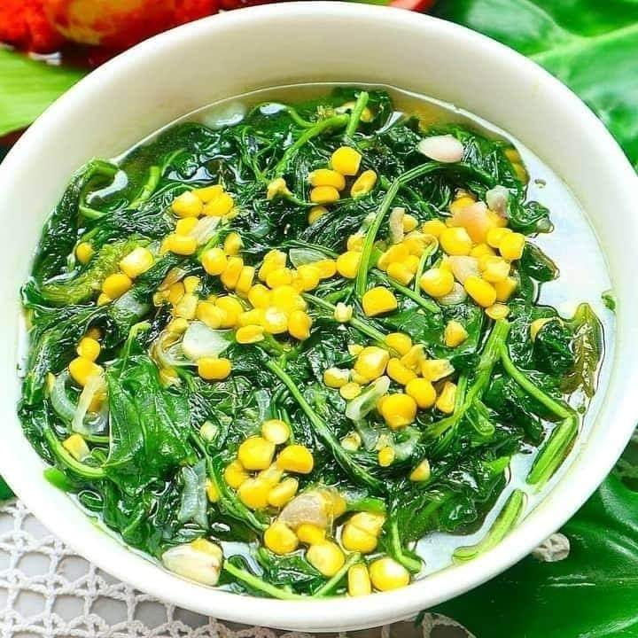

Aneka Resep Sayur ala Rumahan yang Enak, Sehat dan Sederhana
Setiap orang menginnginkan hidup yang sehat, salah satunya dengan menerapkan pola makan yang sehat dengan mengonsumsi sayur-sayuran. Ada juga orang yang tidak terlalu suka makan sayur. Apalagi bagi usia anak-anak, mereka sangat susah untuk makan sayur.
Padahal sayur memiliki banyak gizi, vitamin, dan serat tinggi yang baik untuk kesehatan tubuh. Mungkin karena menu sayur bisa dibilang kurang lezat dibanding menu lainnya. Untuk menyiasati hal itu, kamu bisa membuat olahan beragam sayur jadi masakan yang lezat dan mengunggah selera. Untuk pilihan praktis, ada resep sayur ala rumahan yang selalu jadi favorit.
Kamu juga bisa berkreasi sendiri, mengolah dan menambahkan isian atau toping ke dalam sayur. Beragam penunjang seperti ayam, jamur, tempe, tahu, mie instan, sosis, dan lain-lain. Memasak sendiri dengan sayuran ala rumahan jadi langkah awal memulai pola makan sehat.
Sehat dapat diraih, hemat pun tak terelakkan. Bisa hemat pengeluaran bulanan nih! Beragam resep ini sangat cocok bagi kamu ibu muda yang ingin merayu buah hatinya.
Berikut rangkuman Temonggo.com tentang aneka resep sayur ala rumahan dari berbagai sumber, silahkan disimak.
1. Tumis Kangkung Terasi

Bahan
- 1 ikat kangkung siangi
- Saus tiram
- Garam
Bumbu uleg
- 10 cabe merah
- 5 rawit
- 5 bawput
- 2 blok terasi
Cara membuat:
- Tumis bumbu ulek sampai harum
- Masukan terasi dan bumbu.
- Masak sayur sebentar saja, sajikan.
2. Brokoli Cah Sosis

Bahan :
- 1 bonggol brokoli (siangi, cuci air garam)
- 4 buah sosis sapi (iris serong)
- 3 siung bawang putih, cincang
- 1/2 buah bawang bombay, iris memanjang
- 2 sdm saus tiram
- 1 sdt kecap asin
- Garam merica secukupnya
- Secukupnya air matang
- Larutan maizena
Cara membuat :
- Tumis bawang putih dan bawang bombay hingga harum. Masukan sosis tumis sebentar tambahkan air matang tunggu hingga mendidih.
- Masukan brokoli dan bumbu lain nya. Koreksi rasa. Masak sekitar 2 menit saja.
- Kentalkan dengan larutan maizena. Angkat dan sajikan.
3. Tumis Kacang Panjang Telur Puyuh
Bahan :
- 1 ikat kacang panjang
- 30 butir telur puyuh
- 2 sdm saus tiram
- 1 sdm kecap
- 1 sdt merica
- 5 buah cabai keriting (potong)
- Gula secukupnya
- Air
Bumbu halus :
- 5 butir kemiri
- 5 butir bawang putih
Cara memasak :
- Tumis bumbu halus dan cabai
- Masukkan kacang panjang, setelah layu tambahkan sedikit air
- Tambahkan saus tiram, kecap, gula dan merica. Aduk rata.
- Masukkan telur puyuh, aduk
- Tunggu hingga matang
4. Sayur Bening Bayam
Bahan :
- 1 ikat bayam
- Setengah bonggol jagung, pipil
- 3 siung bawmer iris
- 3 sdm minyak goreng
- 600 ml air
- 1 sdt kaldu ayam bubuk non msg, yg ada msg ckup setengah sdt aja
- 2 sdt kaldu jamur bubuk
- Seujung sdt garam
Cara memasak :
- Tuang minyak ke dlm wajan, tumis bawmer hingga harum, masukkan bayam, tumis hingga agak layu. Tuang air. Biarkan mendidih dl. Masukkan jagung.
- Tambahkan kaldu jamur bubuk, kaldu ayam bubuk, dan garam. Aduk rata. Lakukan tes cicip.
- Masak sampai tingkat kematangan bayam yg disukai, selera masing2 ya.
- Angkat dan sajikan hangat
5. Gulai Nangka

Bahan:
- 700 gram nangka muda, potong2
- 200 gram tetelan sapi
- 4 lonjor kacang panjang, potong2
- 1,2 liter santan (dari 1/2 butir kelapa)
- 15 buah cabe rawit utuh
- 1 ruas jari lengkuas,memarkan
- 3 lembar daun salam
- Garam & gula secukupnya
Bumbu halus:
- 10 butir bawang merah
- 6 siung bawang putih
- 2 buah cabe merah besar
- 5 cabe merah keriting
- 4 cm kunyit, bakar
- 4 butir kemiri, sangrai
- 1 sdm ketumbar, sangrai
- 1 sdt merica butiran
- 1/4 sdt jinten, sangrai
Cara membuat:
- Didihkan air, rebus nangka muda sampai empuk, matikan api, buang airnya, sisihkan.
- Didihkan air, rebus tetelan sampai agak lunak, matikan api, buang airnya, sisihkan.
- Campur rebusan nangka & tetelan didalam panci, tuangi santan.
- Tumis bumbu halus sampai wangi, masukkan, cabe rawit utuh, daun salam & lengkuas, aduk sampai layu, masukkan kacang panjang, bumbui garam & gula, aduk rata, masak sampai kacang panjang agak layu, matikan api.
- Tuang bumbu tumisan kedalam panci berisi nangka & tetelan, hidupkan kembali kompor, masak sambil terus diaduk supaya santan tidak pecah, tes rasa, bila sudah pas matikan api, sajikan.
6. Kembang Kol Cah Ayam

Bahan:
- 1 bongkol kembang kol petik kuntum
- 100gr paha ayam fillet potong2
- 2 siung bawang putih iris tipis
- 2 siung bawang merah iris tipis
- 1 batang daun bawang iris tipis
- 1 sdm saus tomat
- 1 sdm saus tiram
- 1/2 sdt gula
- 1 sdt kecap ikan
- Garam dan merica
- Air maizena
- 100ml air
Cara membuat:
- Lumuri ayam dgn garam dan merica. Sisihkan.
- Tumis duo bawang sampai harum. Masukan ayam. Masak sampai berubah warna.
- Tuang air sampai mendidih.Masukan kembang kol. Beri saus tomat, saus tiram, gula, kecap ikan, garam dan merica. Aduk rata. Koreksi rasa. Masak sampai matang.
- Beri air maizena. Masak sampai meletup.
- Menjelang diangkat beri daun bawang.